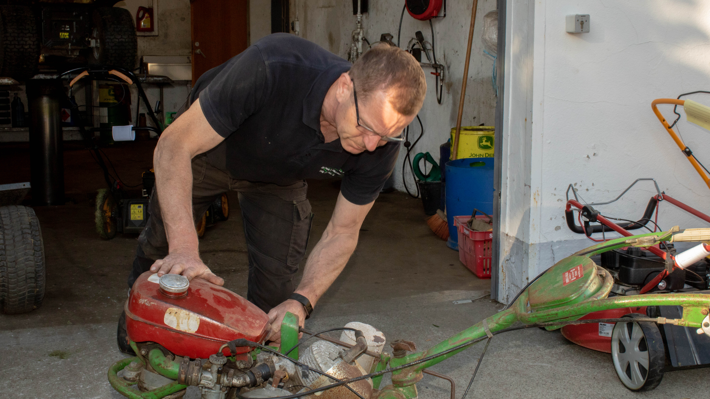
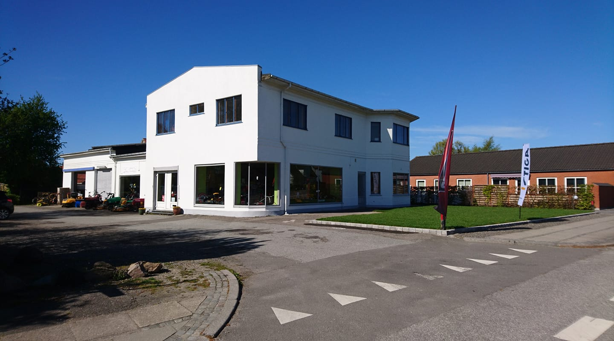

Jeg hedder Jens Erik og jeg er ejer af JE Havemaskiner og har haft virksomheden siden maj 2015.
Jeg er oprindeligt uddannet landbrugsmaskinmekaniker og har 20 års erfaring inden for dette felt.
Vi har fysiske lokaler i Maribo, hvor vi også har et dejligt showroom, så du kan se vores produkter.
Hos mig får du en service baseret på mange års erfaring og jeg står inde for den kvalitet, som der ydes. Det er både ved service og reparation.
Hvis du er på udkig efter nyt til maskinparken, garanterer jeg, at du får et kvalitetsprodukt, som du vil blive glad for. Jeg forhandler flere forskellige mærker, og vi skal nok finde et, som passer præcis til dine behov.
